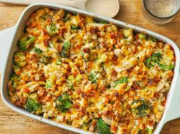

Home
Casserole Recipe

Awesome and Easy Creamy Corn Casserole
July is full of summer festivities. Whether its the Fourth, a potluck, or a day by the pool, there are bound to be a few reasons to whip up a casserole. Maybe you need a crowd pleasing side dish for a big grill-out, or perhaps you just need dinner on the table after a long day in the sun. No matter what, these 10 recipes are great options, and many of them use classic summer produce like tomatoes, zucchini, corn, and squash. Scroll on to discover hearty, rich summertime meals that feed a crowd during the height of summer—and they're definitely worth a try no matter the heat.
Ingridients
- 4 Slices bread, cubed
- 1/4 cup melted butter
- 2 cups cubed zucchini
- 1 large onion, finely chopped
- 1 large egg, beaten
- 1 teaspoon garlic salt to taste
- 2 cups shredded Cheddar cheese
STEPS
- Gather all ingredients. Preheat the oven to 350 degrees F (175 degrees C).
- Place bread cubes in a medium bowl and pour melted butter over top. Add zucchini, onion, egg, and garlic salt; mix well.
- Transfer the mixture into a 9x13-inch baking dish and top with cheese.
- Cover and bake in the preheated oven for 30 minutes. Uncover the dish and bake for another 30 minutes.